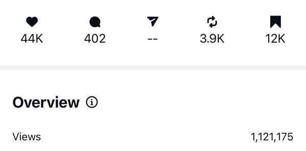
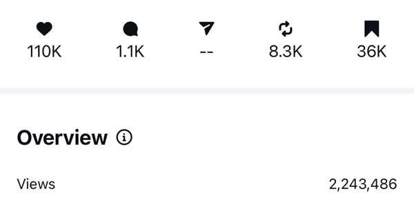
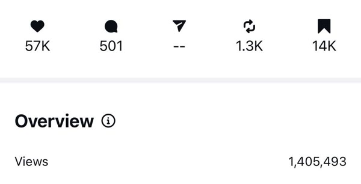
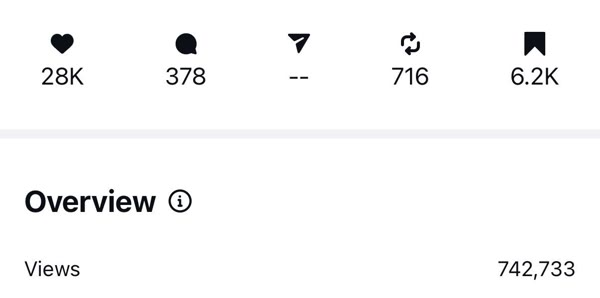
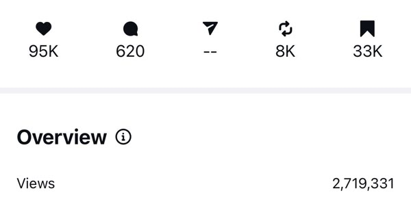

What I did
- Managed the production teamThe whole team that made the clips, day to day.
- Picked the momentsOut of hours of conversation, I chose which 40 seconds become a clip.
- Directed the editsWhere each clip starts, how fast it moves and where it ends.
- Art directionCaptions, look and feel, so every clip looks and sounds like DOAC.
- Ran the whole pipelineClipping, editing and art direction, from the full episode to the finished clip.
At the end of every episode, the last guest leaves a question for the next one. Mine would be: "Can I post this bit?"
What happened
Six of the clips
Nice people say what you want to hear. Kind people say what you need to hear.
5.1M plays, 194K likesInstagramYour limiting beliefs about what's possible for you are not facts.
2.7M plays, 144K likesInstagramI asked the world's most fearless climber if he finds it awkward to talk about emotions.
2.6M plays, 120K likesInstagramWhat makes us fall in love is not the person that's perfect.
3M plays, 111K likesInstagramThe greatest commitments you can make are the ones you make to yourself.
346K plays, 14K likesInstagramYour biggest breakthroughs will often come from the most petty detail.
806K plays, 399 commentsInstagramTap any reel for sound. Plays and likes as Instagram showed them on 20 Nov 2026.
Five more clips, with proof: 8.2M views
Steven is on Dragons' Den, so we brought numbers. These screenshots came straight from his team.
Well done on some of the recent content guys, can really feel the momentum on IG!!!!!




